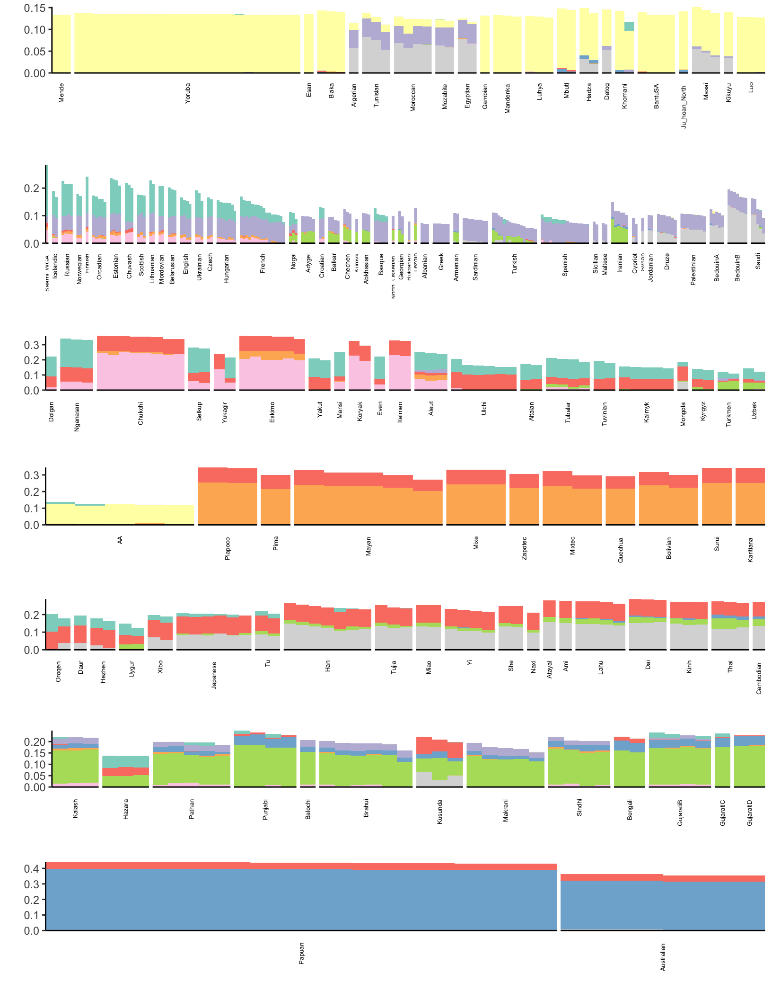

Last updated: 2019-02-12
workflowr checks: (Click a bullet for more information) ✖ R Markdown file: uncommitted changes
The R Markdown is untracked by Git. To know which version of the R Markdown file created these results, you’ll want to first commit it to the Git repo. If you’re still working on the analysis, you can ignore this warning. When you’re finished, you can run wflow_publish to commit the R Markdown file and build the HTML.
✔ Environment: empty
Great job! The global environment was empty. Objects defined in the global environment can affect the analysis in your R Markdown file in unknown ways. For reproduciblity it’s best to always run the code in an empty environment.
✔ Seed:
set.seed(20190211)
The command set.seed(20190211) was run prior to running the code in the R Markdown file. Setting a seed ensures that any results that rely on randomness, e.g. subsampling or permutations, are reproducible.
✔ Session information: recorded
Great job! Recording the operating system, R version, and package versions is critical for reproducibility.
✔ Repository version: 29966a9
wflow_publish or wflow_git_commit). workflowr only checks the R Markdown file, but you know if there are other scripts or data files that it depends on. Below is the status of the Git repository when the results were generated:
Ignored files:
Ignored: .Rhistory
Ignored: data/NearEastPublic/
Untracked files:
Untracked: analysis/flash.Rmd
Unstaged changes:
Modified: _workflowr.yml
Here I explore Matthew’s suggestion of applying a version of FLASH to visualize population structure. Let \(\mathbf{Y}\) be the \(n \times p\) genotype matrix where the rows are individuals and the columns are SNPs. The elements of this matrix \(y_{ij} \in \{0, 1, 2\}\) encode the count of a arbitrarily predefined allele for the diploid individual \(i\) and SNP \(j\). Here we imagine that the genotypes can be explained by \(K\) latent drift events. Each drift event effects the entire genome, i.e. all of the SNPs, but only a subset of individuals ancestors were in a “population” whom experienced the \(k\)th event. For instance, the ancestor of all Europeans experienced the “Out of Africa” drift event and the ancestors of North and South Americans crossed the Bering strait. We assume the following matrix factorization model for the genotypes that can flexibly describe this process:
\[ y_{ij} = \mu_j + \sum_{k=1} \ell_{ik} \delta_{jk} + e_{ij} \]
where \(\mu_j\) represents the mean genotype at the \(j\)th SNP (something like a mean allele frequency), \(\ell_{ik}\) represents a non-negative weight of the \(i\)th individual on the \(K\)th drift event, \(\delta_{jk}\) represents a deviance from the mean genotype which defines the drift event, and \(e_{ij} \sim N(0, \sigma^2)\) is a random error with variance \(\sigma^2\). Given the model I described above it would be natural for \(\boldsymbol{\ell}_k\) to be sparse, with different levels of sparsity for each \(k\) i.e. in a dataset of global Human diversity, all the non-African individuals experienced the “Out of Africa” drift event but only a subset of samples experienced the founding of Finland, or some population specific processes. Here we assume the following priors for the individual weights (loadings) and deviances (factors):
\[ \ell_{1k}, \dots, \ell_{nk} \overset{iid}{\sim} g_k, \ g_k \in \mathcal{G}_+ \\ \delta_{1k}, \dots, \delta_{pk} \overset{iid}{\sim} N(0, 1) \]
Briefly: where \(g_k\) is an adaptive shrinkage prior that is constrained to be in the family of unimodal and non-negative distributions \(\mathcal{G}_+\). The prior on the sample weights can be fit using flashier using an efficient approach that adapts to unknown sparsity using Empirical Bayes via solving iterative convex optimization problems. We assume the deviances come from a dense prior given that all SNPs are effected by the drift event. More can be expanded upon the model later lets now explore a proof of principle with a real dataset using flashier.
Lets import some needed packages
library(ggplot2)
library(tidyr)
library(dplyr)
library(softImpute)
library(flashier)I prepared a dataset described in Lazaridis et al. 2017 which include 2068 individuals and 621799 SNPs sampled from around the globe! This dataset is often referred to as the “Human Origins Array Dataset” and is commonly used a reference panel to determine the ancestry of individuals from new sample of human genetic variation. I removed all SNPs with allele frequency less than 5% and sample missingness fraction greater than 1%. I then LD pruned the resulting genotype matrix using standard parameters in plink. This resulted in 167178 SNPs which will help us do some exploratory analysis more efficiently. First we read this filtered dataset:
X = t(lfa:::read.bed("../data/NearEastPublic/HumanOriginsPublic2068_maf_geno_ldprune"))[1] "reading in 2068 individuals"
[1] "reading in 167178 snps"
[1] "snp major mode"
[1] "reading snp 20000"
[1] "reading snp 40000"
[1] "reading snp 60000"
[1] "reading snp 80000"
[1] "reading snp 100000"
[1] "reading snp 120000"
[1] "reading snp 140000"
[1] "reading snp 160000"n = nrow(X)
p = ncol(X)
print(n)[1] 2068print(p)[1] 167178Next we read in some meta data that includes population and regional labels for each individual:
# read the meta data
meta_df = read.table("../data/NearEastPublic/HumanOriginsPublic2068_clst.tsv", sep="\t")
colnames(meta_df) = c("iid", "clst")
# read the clst data
clst_df = read.table("../data/NearEastPublic/meta.tsv", sep="\t", header=TRUE)
clst_df$clst = clst_df$Simple.Population.ID
clst_df = clst_df %>% distinct(clst, .keep_all = TRUE) To start lets sub-sample the genotype matrix so we have fewer individuals
set.seed(12345)
idx = sample(n, 500, replace = FALSE)
Y = X[idx, ]
m = nrow(Y)
p = ncol(Y)
print(m)[1] 500print(p)[1] 167178Next lets run greedy flashier on the resulting data matrix with a maximum of 10 factors:
K = 9 # the first factor is fixed
# to start we use point.normal not normal
flash_res = flashier(Y,
greedy.Kmax=K,
prior.type=c("nonnegative", "point.normal"),
var.type=0,
fix.dim=list(1),
fix.idx=list(1:m),
fix.vals=list(rep(1, m)))Initializing flash object...
Adding factor 1 to flash object...
Adding factor 2 to flash object...
An iteration decreased the objective by 3.00e+00. Try backfitting with warmstarts.
Adding factor 3 to flash object...
An iteration decreased the objective by 1.02e+02. Try backfitting with warmstarts.
Adding factor 4 to flash object...
An iteration decreased the objective by 2.68e+01. Try backfitting with warmstarts.
Adding factor 5 to flash object...
An iteration decreased the objective by 1.90e+00. Try backfitting with warmstarts.
Adding factor 6 to flash object...
An iteration decreased the objective by 6.90e+00. Try backfitting with warmstarts.
Adding factor 7 to flash object...
An iteration decreased the objective by 1.96e+01. Try backfitting with warmstarts.
Adding factor 8 to flash object...
An iteration decreased the objective by 2.34e+01. Try backfitting with warmstarts.
Adding factor 9 to flash object...
An iteration decreased the objective by 4.91e+01. Try backfitting with warmstarts.
Adding factor 10 to flash object...
An iteration decreased the objective by 1.83e+00. Try backfitting with warmstarts.
Nullchecking 9 factors...
Wrapping up...
Done.Lets now visualize the fitted flashier fit:
# setup loadings data.frame
l_df = as.data.frame(flash_res$loadings$normalized.loadings[[1]])
l_df$iid = as.vector(meta_df$iid[idx]) # individual ids
l_df$clst = meta_df$clst[idx] # population labels
l_df$lab = substr(l_df$clst, 1, 3) # shorthand for population labels
# join with the meta data
l_df = l_df %>% inner_join(clst_df, on="clst")
l_df = l_df %>% arrange(Region, clst) # sort by region then by population
l_df$iid = factor(l_df$iid, levels = l_df$iid) # make sure the ids are sorted
colnames(l_df)[1:(K+1)] = paste0("K=", 1:(K+1)) # name the columsn
# gather the data.frame for plotting
l_gath_df = l_df %>%
select(-Simple.Population.ID, -Verbose.Population.ID, -Country,
-Latitude, -Longitude, -Samples, -Passed.QC, -Contributor) %>%
gather(K, value, -iid, -clst, -lab, -Region)
# plot facet grid
p = ggplot(data=l_gath_df, aes(x=iid, y=value, label=lab, color=Region)) +
geom_text(size=2) +
scale_colour_brewer(palette = "Set2", guide=guide_legend(override.aes=list(size=4))) +
scale_y_continuous(limits = c(0, NA)) + # non-negative
theme_bw() +
theme(axis.text.x=element_blank(), axis.ticks.x=element_blank()) +
theme(panel.grid.major = element_blank(), panel.grid.minor = element_blank()) +
facet_grid(factor(K, levels=paste0("K=", 1:10))~., scales="free_y") +
xlab("Individual") +
ylab("Loading")
p
Here each row of the facet grid represents a different latent “drift event”. Each tick on the x-axis is a different individual. I represent each individual by a three letter short hand for the population label provided in the meta data. I then color each individual by a broad scale regional level label. There is much that can be improved in the visualization which I like to think about more as its quite important but I think this is a good starting direction that helps reveal some patterns. Here are a couple observations:
flashier) the 1st drift event is a constant value across the individualsAdd more observationsMy impression is that this approach is promising in building an interpretable visualization of population structure. I will continue to add to this analysis with comparisons to other standard approaches like PCA and the PSD model.
sessionInfo()R version 3.5.1 (2018-07-02)
Platform: x86_64-apple-darwin13.4.0 (64-bit)
Running under: macOS 10.14.2
Matrix products: default
BLAS/LAPACK: /Users/jhmarcus/miniconda3/lib/R/lib/libRblas.dylib
locale:
[1] en_US.UTF-8/en_US.UTF-8/en_US.UTF-8/C/en_US.UTF-8/en_US.UTF-8
attached base packages:
[1] stats graphics grDevices utils datasets methods base
other attached packages:
[1] bindrcpp_0.2.2 flashier_0.1.0 softImpute_1.4 Matrix_1.2-15
[5] dplyr_0.7.6 tidyr_0.8.1 ggplot2_3.0.0
loaded via a namespace (and not attached):
[1] tidyselect_0.2.4 xfun_0.4 reshape2_1.4.3
[4] purrr_0.2.5 ashr_2.2-27 lattice_0.20-38
[7] colorspace_1.3-2 htmltools_0.3.6 yaml_2.2.0
[10] rlang_0.3.1 mixsqp_0.1-93 R.oo_1.22.0
[13] pillar_1.3.0 glue_1.3.0 withr_2.1.2
[16] R.utils_2.7.0 RColorBrewer_1.1-2 foreach_1.4.4
[19] bindr_0.1.1 plyr_1.8.4 stringr_1.3.1
[22] munsell_0.5.0 gtable_0.2.0 workflowr_1.1.1
[25] R.methodsS3_1.7.1 lfa_1.9.0 codetools_0.2-15
[28] evaluate_0.12 labeling_0.3 knitr_1.21
[31] doParallel_1.0.14 pscl_1.5.2 parallel_3.5.1
[34] Rcpp_1.0.0 corpcor_1.6.9 scales_0.5.0
[37] backports_1.1.2 truncnorm_1.0-8 digest_0.6.18
[40] stringi_1.2.4 ebnm_0.1-17 grid_3.5.1
[43] rprojroot_1.3-2 tools_3.5.1 magrittr_1.5
[46] lazyeval_0.2.1 tibble_1.4.2 crayon_1.3.4
[49] whisker_0.3-2 pkgconfig_2.0.1 MASS_7.3-51.1
[52] SQUAREM_2017.10-1 assertthat_0.2.0 rmarkdown_1.11
[55] iterators_1.0.10 R6_2.3.0 git2r_0.23.0
[58] compiler_3.5.1 This reproducible R Markdown analysis was created with workflowr 1.1.1